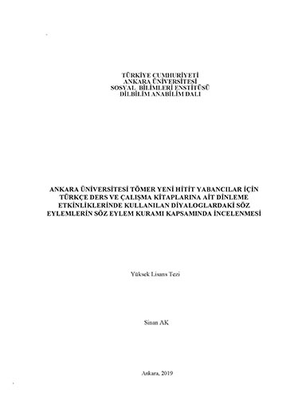
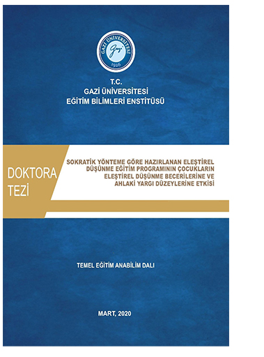
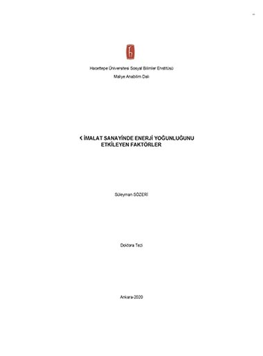
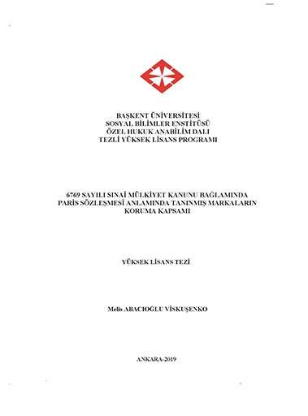
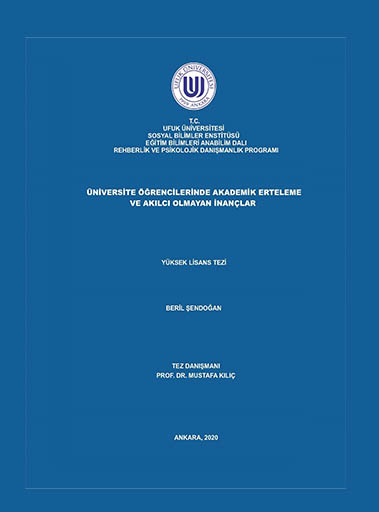

Tez Kapağı Örnekleri
Farklı üniversitelere ve enstitülere uygun tez kapağı örneklerimizden ilham alın.
Kapak Örnekleri

Ankara Üniversitesi

Gazi Üniversitesi

Hacettepe Üniversitesi

Başkent Üniversitesi

Ufuk Üniversitesi